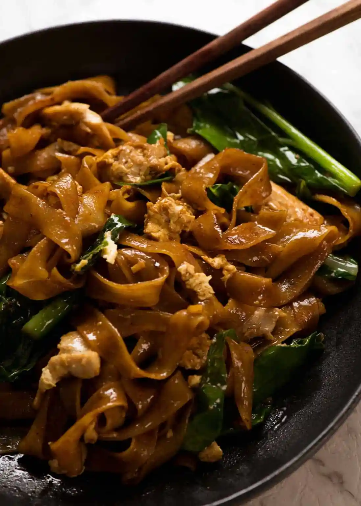

Pad See Ew

Description
Pad See Ew – the popular Thai stir fried noodles straight from the streets of Thailand made at home!
While Pad Thai is sweeter and nuttier, Pad See Ew is salty, balanced with a touch of sour and a wonderful chargrilled flavour which you can create at home!
Ingredients
500g fresh rice noodles
220g chicken tenderloins
1/2 bunch (around 125g) gai larn or Chinese broccoli
2 eggs, beaten
4 cloves garlic, peeled and chopped
2 tablespoons fish sauce
2 tablespoons oyster sauce
2 tablespoons chicken broth
1 tablespoon chilli paste with soybean oil
1 tablespoon kecap manis
1 teaspoon dark soy sauce
1/2 teaspoon white pepper
Steps
- Garlic, chicken and Chinese broccoli STEMS first – Using either a wok or large skillet set over high heat, heat the oil then sauté the garlic until it goes light golden. Add the chicken then once it mostly changes from pink to white, add the Chinese broccoli stems which take longer to cook than the leafy part.
Once the chicken is cooked (it should only take 2 to 3 minutes), toss the Chinese broccoli leaves in and cook for 30 seconds or so just until wilted.
- Push everything to the side to make room to scramble the eggs on the side. This is the traditional Thai way of scrambling eggs in Pad See Ew!
- Crack egg straight into the wok.
- Scramble egg – Then mix to scramble it. Speed is of the essence here – we want scrambled egg not a sunny side up egg!
- Empty wok – Remove the chicken and vegetables onto plate. As mentioned above, the best way to cook Pad See Ew at home is to cook the noodles separately so we can get some nice caramelisation on them. If we don’t do this, then the noodles just stew instead of caramelising.
- Add noodles and sauce into the wok.
- Toss quickly for 1 to 1 1/2 minutes until the sauce is dispersed throughout the noodles and you see some caramelisation on the edges
- Add chicken and veg back in – Once the noodles are caramelised, add the chicken and vegetables back in. Give it a quick toss just to disperse, then serve!